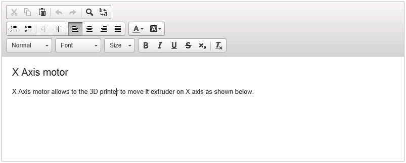
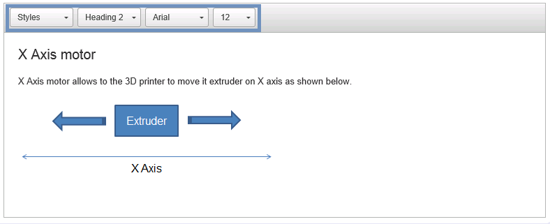

MDE Rich Text is designed to be easy for integration. With a few source code lines the widget is ready to use.
The following sections illustrate diffrents steps to follow to use the widget.
Here the main steps to follow to use the widget.
Notice all the steps are not mandatory. Only step 2 and step 4 are mandatory. MDE Rich Text Widget provides a factory with a pre-initialized widgets for Model Driven Engineering and adapted to be use on Eclipse workbench.
The implementation of the widget is org.polarsys.kitalpha.richtext.widget.MDERichtextWidgetImpl which implements org.polarsys.kitalpha.common.intf.MDERichTextWidget interface. The following table shows the structure and the services which each level of the widget provides
| Widget | Parent | Description |
|---|---|---|
| MDERichtextWidgetImpl | MDENebulaBasedRichTextWidgetImpl | Install listeners on Nebula widget for saving the content in model element and navigation menu to for opening links |
| MDENebulaBasedRichTextWidgetImpl | BrowserBasedMDERichTextWidgetImpl | Instantiates and communicates with Nebula Rich Text Editor. |
| AbstractMDERichTextWidget | MDERichTextWidget (Interface) | Implements generic services for the widget |
The most notable services provided by the widget are:
This section shows guidelines to use the widget.
The MDE Rich Text Widget offer a various way to instantiate it. It defines many constructors. The constructors without widget configuration as parameter, simply reuse the default configuration of Nebula Rich Text Editor. The snippet and capture below, shows the widget with a default configuration
... MDERichTextWidget richtextWidget = new MDERichtextWidgetImpl(parent); ...

Notice on the capture, the image is not displayed, as shown in next capture, even they are on the same model element

The reason is the functionalities provided by the default configuration of CKEditor. By default, adding an item the toolbar activates the capacity to handle its functionality and generate the output (text stored in the model). Nebula default configuration does not activate the capacity of adding images (i.e., generate <img .../> tag). In MDE Rich Text, all content is allowed by default. That is why, even if we remove add images item from the toolbar, they still displayed.
final MDENebulaRichTextConfiguration configuration; configuration.initializeToolbarItem(MDERichTextConstants.CLIPBOARD_TOOLBAR); configurationc.initializeToolbarItem(MDERichTextConstants.BASIC_STYLES); richtextWidget = new MDERichtextWidgetImpl(parent, configuration);
Leads to this result

Once a widget is created, it could be customized to specify the way to store its content in the model.
All save strategy must implement: org.polarsys.kitalpha.richtext.common.intf.SaveStrategy interface
A defautl implementation of save strategy it's look likes:
private final SaveStrategy DEFAULT_SAVE_STRATEGY = new SaveStrategy() {
@Override
public void save(String editorText, EObject objectOwner, EStructuralFeature objectFeature) {
objectOwner.eSet(objectFeature, editorText);
}
};
For instance, if the model lives in a Transactional Editing Domain, every modification of the model must be executed against this Editing Domain. Then, The default strategy is not adapted to do the work and it must be replaced by the right operation
Replacement of the strategy is done by calling setSaveStrategy(SaveStrategy) service on the widget.
...
MDERichTextWidget richtextWidget = getRichtextWidget();
richtextWidget.setSaveStrategy(new SaveStrategy() {
@Override
public void save(String editorText, EObject objectOwner, EStructuralFeature objectFeature) {
//Custom save strategy
doCustomSave(editorText, objectOwner, objectFeature);
}
});
...
The last thing to do is bind the widget to model element by calling bind(EObject, EStructuralFeature) service.
... richtextWidget.bind(getEObjectOwner(), getEStructuralFeatureOfEObjectOwner()); ...
The bind service requires that its arguments must not be null, otherwise, it will throw immediately an exception.
MDE Rich Text Widget provides a factory which allows to create a turnkey widget to avoid a boring work on the configuration in Step 1.
Here a snippet from Kitalpha Component Sample example embeded in page of Activity Explorer
...
MDERichTextFactory factory = new MDERichTextFactory();
richtextWidget = factory.setToolbarColor("#EEEEFF").createDefaultRichTextWidget(parent);
...

MDE Rich Text Wiget is also embded in an Eclipse editor. This editor can be opened with widget configuration provided by the MDE Rich Text Widget Factory by clicking on the dedicated item on the toolbar ( ).
).
For reusing the editor in other context, it is straightforward:
IWorkbenchPage activePage = PlatformUI.getWorkbench().getActiveWorkbenchWindow().getActivePage();
MDERichTextEditorInput input = new MDERichTextEditorInput(getEObjectOwner(), getEObjectEStructuralFeature(), getSaveStrategy());
try {
activePage.openEditor(input, "org.polarsys.kitalpha.richtext.widget.editor");
} catch (PartInitException e) {
handleException(e);
}
The needed information are:
To do the integration with a specific property Sheet Page, use org.polarsys.kitalpha.richtext.widget.propertySheetPageDelegate extension point which requires a contributorId and implementation of org.polarsys.kitalpha.richtext.widget.propertysheet.MDERichTextPropertySheetProvider interface.
Here an example to contribute to this extension point to a project explorer contributorId:
<extension
point="org.polarsys.kitalpha.richtext.widget.propertySheetPageDelegate">
<propertySheetDelegate
contributorId="org.eclipse.ui.navigator.ProjectExplorer"
delegateProvider="org.polarsys.kitalpha.ui.MyMDERichTextPropertySheetProvider">
</propertySheetDelegate>
</extension>
The implementation of MyMDERichTextPropertySheetProvider:
public class MyMDERichTextPropertySheetProvider implements MDERichTextPropertySheetProvider {
public MyMDERichTextPropertySheetProvider() {
}
@Override
public TabbedPropertySheetPage getTabbedPropertySheetPageDelegate(MDERichTextEditor contributor) {
return new TabbedPropertySheetPage(contributor);
}
}